Backcountry Skiing
Tuesday, November 30, 2010
This morning Karl, a buddy from my department, picked me up at 6:00 am for my 2nd backcountry skiing adventure. For those who don’t know, backcountry skiing is where you put “skins” on the bottom of your skis to give you traction to climb up a mountain. Once at the top, you take the skins off, put them in your pack, and ski down. It’s a fantastic workout and let’s you get into areas of virgin powder away from the normal resorts. Our objective today was to get in a big climb before we needed to be at work.
We drove for an hour and went up Little Cottonwood Canyon. The original plan was to climb Grizzly Gulch next to the Alta ski resort. However, the sight of a nearby ridge next to Flagstaff Mountain caused a change in plans. The snow there was simply too enticing!
As we geared up it was COLD! The temperature was somewhere below 10 F. Here is Karl right before we started. We are going to go up the mountainside just beyond the right edge of the photo.
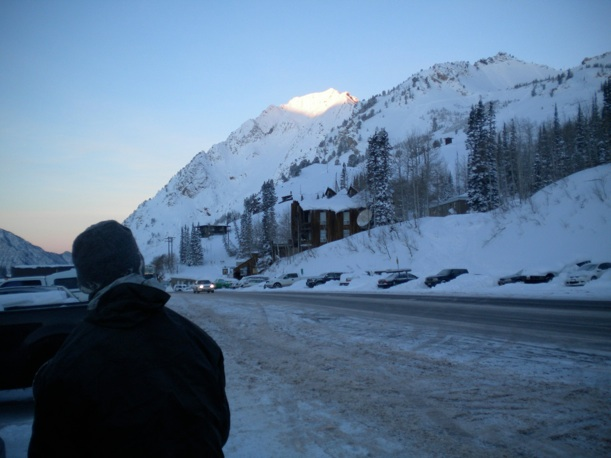
As we began our ascent there were a number of other people out with the same plan as ours. We will climb to the highest point you can see to the left of the center of the photo. From this angle you can’t really tell how steep it is. It’s not too bad at this point, but gets quite a bit steeper a little higher up.
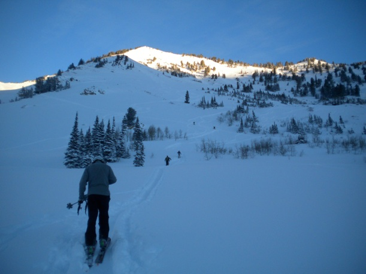
Here is Karl.
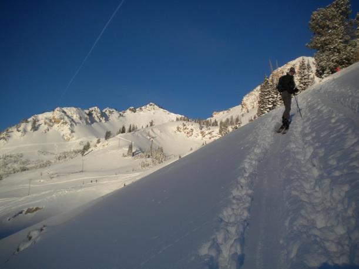
The sun is slowly making its way above the mountains behind us. This is a view to the west. Note the ski tracks on the mountainside.
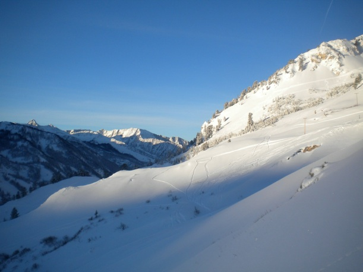
Here’s another view during the climb. With the sun up it got pretty warm--at least in the 20’s!
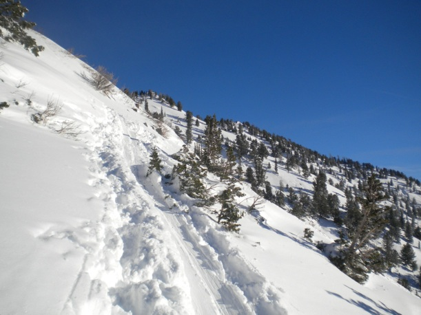
Looking down toward Alta.
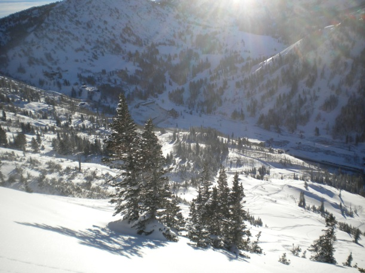
Another view during the climb.
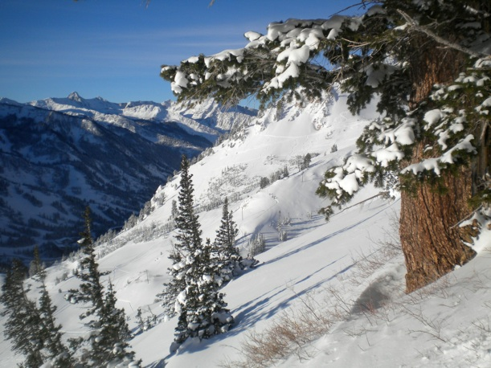
After an hour and 45 minutes we made it to the top of the ridge, having climbed 1,650 feet.
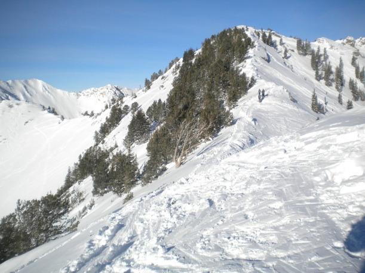
Karl
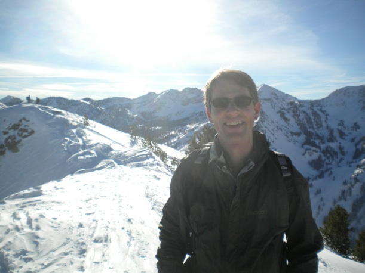
Me
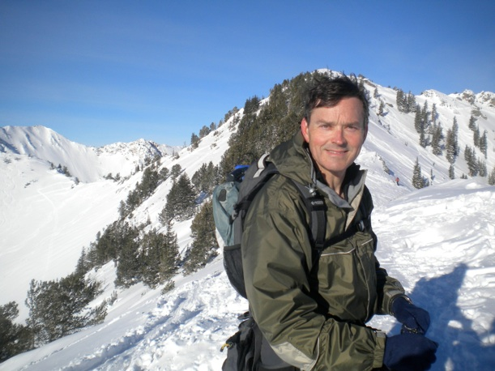
And now for some of the views from the top. It was spectacular! To the north we could look into Big Cottonwood Canyon. Here is looking to the west down Little Cottonwood Canyon.
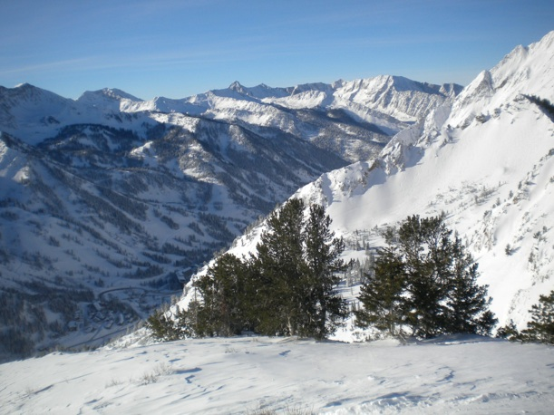
Looking to the southeast. You can see Alta at the bottom of the canyon.
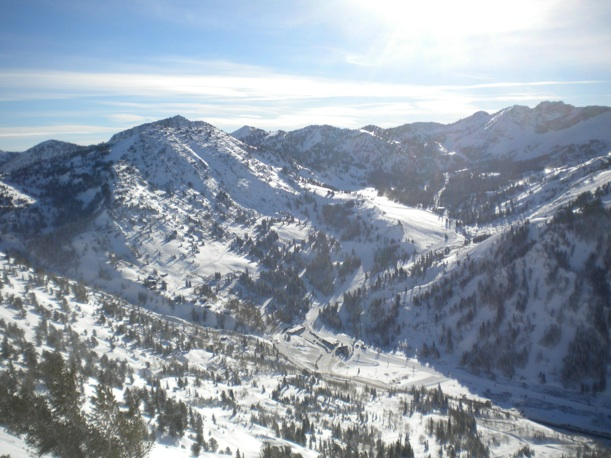
Now we’re all set to go down. Here’s a look beyond Karl’s skis at the slope we are about to descend.
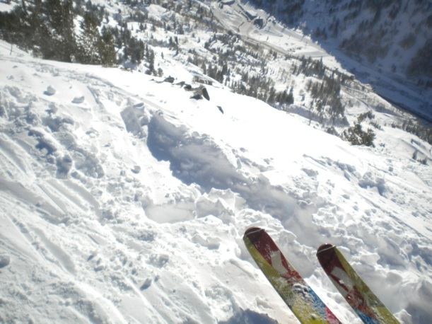
Video of Karl coming down. It’s difficult to see how steep it is in the video since we’re looking straight uphill.
And one of me:
Looking back on our ski tracks.
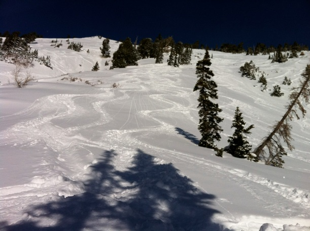
Now we are most of the way down. Looking up at what we just skied:

We made it back to the car in a little under 2.5 hours. View from the car:
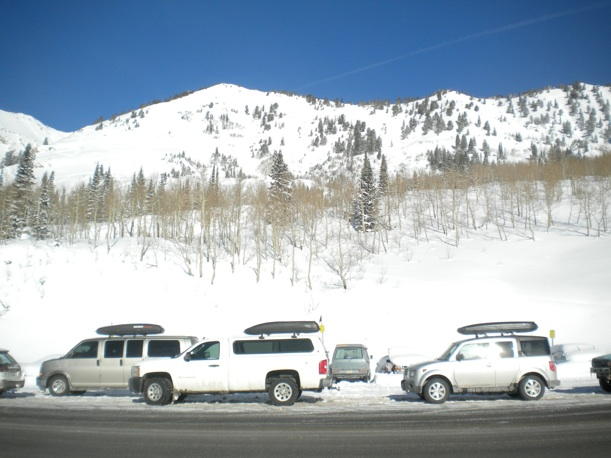
Bottom line: backcountry skiing is great! It will definitely be one of my major winter activities. In addition to the excellent skiing in deep powder, the workout is fantastic. My heart rate monitor said I had an average heart rate of 142 beats per minute and burned 1,750 calories.
The cool thing is that there is so much country in the mountains around here to explore. I can’t wait!
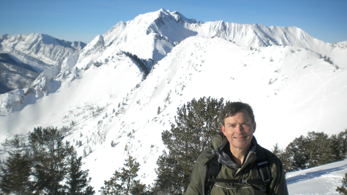